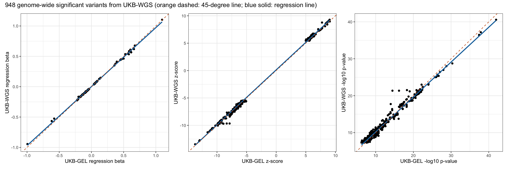
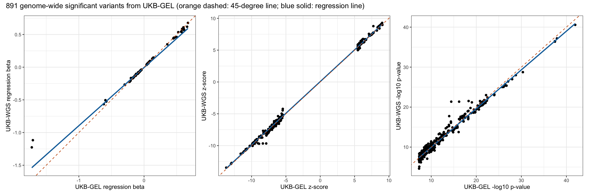
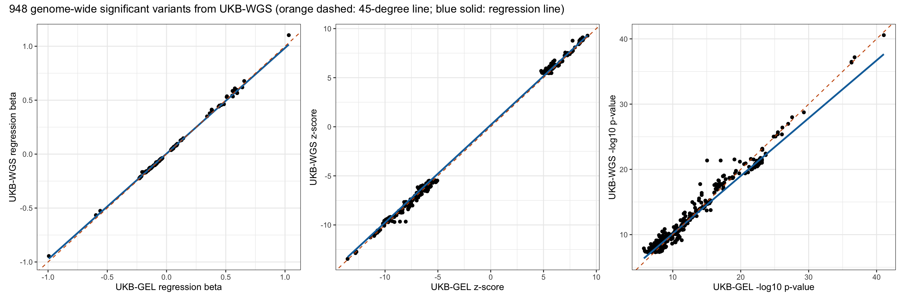
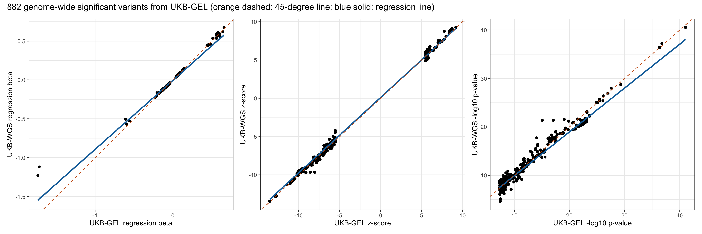

Last updated: 2025-07-22
Checks: 7 0
Knit directory: scratch/
This reproducible R Markdown analysis was created with workflowr (version 1.7.1). The Checks tab describes the reproducibility checks that were applied when the results were created. The Past versions tab lists the development history.
Great! Since the R Markdown file has been committed to the Git repository, you know the exact version of the code that produced these results.
Great job! The global environment was empty. Objects defined in the global environment can affect the analysis in your R Markdown file in unknown ways. For reproduciblity it’s best to always run the code in an empty environment.
The command set.seed(20250402) was run prior to running
the code in the R Markdown file. Setting a seed ensures that any results
that rely on randomness, e.g. subsampling or permutations, are
reproducible.
Great job! Recording the operating system, R version, and package versions is critical for reproducibility.
Nice! There were no cached chunks for this analysis, so you can be confident that you successfully produced the results during this run.
Great job! Using relative paths to the files within your workflowr project makes it easier to run your code on other machines.
Great! You are using Git for version control. Tracking code development and connecting the code version to the results is critical for reproducibility.
The results in this page were generated with repository version 05c60d8. See the Past versions tab to see a history of the changes made to the R Markdown and HTML files.
Note that you need to be careful to ensure that all relevant files for
the analysis have been committed to Git prior to generating the results
(you can use wflow_publish or
wflow_git_commit). workflowr only checks the R Markdown
file, but you know if there are other scripts or data files that it
depends on. Below is the status of the Git repository when the results
were generated:
Ignored files:
Ignored: .DS_Store
Ignored: .Rhistory
Ignored: .Rproj.user/
Note that any generated files, e.g. HTML, png, CSS, etc., are not included in this status report because it is ok for generated content to have uncommitted changes.
These are the previous versions of the repository in which changes were
made to the R Markdown
(analysis/compare_wgs_with_gel_b06.Rmd) and HTML
(docs/compare_wgs_with_gel_b06.html) files. If you’ve
configured a remote Git repository (see ?wflow_git_remote),
click on the hyperlinks in the table below to view the files as they
were in that past version.
| File | Version | Author | Date | Message |
|---|---|---|---|---|
| Rmd | 05c60d8 | Xiang Zhu | 2025-07-22 | compare wgs-based xiangzhu/brain2gene#14 with gel-based xiangzhu/brain2gene#2 results |
Number of rows in the new data frame: 71258185 Number of rows in the old data frame: 49371067 Number of genome-wide significant variants in the new GWAS: 1080 Number of genome-wide significant variants in the old GWAS: 892 Number of GWAS loci in the new GWAS: 16 Number of GWAS loci in the old GWAS: 15 Total number of rows after joining two data frames: 46569444 Pearson correlation between new_A1FREQ in new and old_A1FREQ in old:
Estimate = 0.99987504 , 95% CI = [ 0.99987497 , 0.99987511 ]
Regression coefficients for new_A1FREQ (new ~ old):
Estimate Std. Error t value Pr(>|t|)
(Intercept) 7.564472e-06 3.898305e-07 19.40452 7.073523e-84
x 9.997959e-01 2.316356e-06 431624.53028 0.000000e+00
Pearson correlation between new_BETA in new and old_BETA in old:
Estimate = 0.88781083 , 95% CI = [ 0.88774999 , 0.88787164 ]
Regression coefficients for new_BETA (new ~ old):
Estimate Std. Error t value Pr(>|t|)
(Intercept) 0.0004461495 1.684944e-05 26.47859 1.714763e-154
x 0.8527119127 6.477182e-05 13164.86031 0.000000e+00
Pearson correlation between new_SE in new and old_SE in old:
Estimate = 0.98532986 , 95% CI = [ 0.98532149 , 0.98533822 ]
Regression coefficients for new_SE (new ~ old):
Estimate Std. Error t value Pr(>|t|)
(Intercept) 0.00134634 6.278129e-06 214.4492 0
x 0.95146903 2.414882e-05 39400.2249 0
Pearson correlation between new_CHISQ in new and old_CHISQ in old:
Estimate = 0.84848897 , 95% CI = [ 0.84840851 , 0.84856938 ]
Regression coefficients for new_CHISQ (new ~ old):
Estimate Std. Error t value Pr(>|t|)
(Intercept) 0.1547563 1.402612e-04 1103.343 0
x 0.8491513 7.761022e-05 10941.230 0
Pearson correlation between new_LOG10P in new and old_LOG10P in old:
Estimate = 0.8386571 , 95% CI = [ 0.83857187 , 0.83874228 ]
Regression coefficients for new_LOG10P (new ~ old):
Estimate Std. Error t value Pr(>|t|)
(Intercept) 0.07093665 5.025817e-05 1411.445 0
x 0.83931929 7.987623e-05 10507.748 0
Pearson correlation between new_ZSCORE in new and old_ZSCORE in old:
Estimate = 0.9105893 , 95% CI = [ 0.91054023 , 0.91063835 ]
Regression coefficients for new_ZSCORE (new ~ old):
Estimate Std. Error t value Pr(>|t|)
(Intercept) 0.00172374 6.119005e-05 28.17027 1.357829e-174
x 0.91099866 6.059309e-05 15034.69590 0.000000e+00Pearson correlation between new_A1FREQ in new and old_A1FREQ in old:
Estimate = 0.99994115 , 95% CI = [ 0.99993315 , 0.9999482 ]
Regression coefficients for new_A1FREQ (new ~ old):
Estimate Std. Error t value Pr(>|t|)
(Intercept) -7.437164e-05 8.268318e-05 -0.8994773 0.3686274
x 1.000145e+00 3.527952e-04 2834.9163277 0.0000000
Pearson correlation between new_BETA in new and old_BETA in old:
Estimate = 0.99947355 , 95% CI = [ 0.99940197 , 0.99953656 ]
Regression coefficients for new_BETA (new ~ old):
Estimate Std. Error t value Pr(>|t|)
(Intercept) 0.001293283 0.0001720733 7.515884 1.309269e-13
x 0.971736034 0.0010255768 947.501937 0.000000e+00
Pearson correlation between new_SE in new and old_SE in old:
Estimate = 0.99895788 , 95% CI = [ 0.99881623 , 0.99908258 ]
Regression coefficients for new_SE (new ~ old):
Estimate Std. Error t value Pr(>|t|)
(Intercept) 0.0007584154 3.000307e-05 25.27793 3.949669e-108
x 0.9214104825 1.368743e-03 673.18022 0.000000e+00
Pearson correlation between new_CHISQ in new and old_CHISQ in old:
Estimate = 0.99554812 , 95% CI = [ 0.99494419 , 0.99608006 ]
Regression coefficients for new_CHISQ (new ~ old):
Estimate Std. Error t value Pr(>|t|)
(Intercept) 3.1907986 0.217843304 14.64722 6.173761e-44
x 0.9450275 0.002908971 324.86662 0.000000e+00
Pearson correlation between new_LOG10P in new and old_LOG10P in old:
Estimate = 0.99553061 , 95% CI = [ 0.9949243 , 0.99606463 ]
Regression coefficients for new_LOG10P (new ~ old):
Estimate Std. Error t value Pr(>|t|)
(Intercept) 0.7497900 0.050203985 14.93487 1.919e-45
x 0.9449347 0.002914439 324.22520 0.000e+00
Pearson correlation between new_ZSCORE in new and old_ZSCORE in old:
Estimate = 0.99961071 , 95% CI = [ 0.99955778 , 0.99965731 ]
Regression coefficients for new_ZSCORE (new ~ old):
Estimate Std. Error t value Pr(>|t|)
(Intercept) 0.1274518 0.0075767281 16.82149 9.462419e-56
x 1.0051971 0.0009121835 1101.96814 0.000000e+00Pearson correlation between new_A1FREQ in new and old_A1FREQ in old:
Estimate = 0.99995641 , 95% CI = [ 0.99995028 , 0.99996178 ]
Regression coefficients for new_A1FREQ (new ~ old):
Estimate Std. Error t value Pr(>|t|)
(Intercept) -7.508489e-05 8.622325e-05 -0.8708195 0.3840878
x 1.000175e+00 3.132175e-04 3193.2278796 0.0000000
Pearson correlation between new_BETA in new and old_BETA in old:
Estimate = 0.98927692 , 95% CI = [ 0.98777859 , 0.99059242 ]
Regression coefficients for new_BETA (new ~ old):
Estimate Std. Error t value Pr(>|t|)
(Intercept) -0.005892449 0.0008035041 -7.33344 5.047925e-13
x 0.889338476 0.0044035787 201.95812 0.000000e+00
Pearson correlation between new_SE in new and old_SE in old:
Estimate = 0.99827842 , 95% CI = [ 0.99803663 , 0.99849046 ]
Regression coefficients for new_SE (new ~ old):
Estimate Std. Error t value Pr(>|t|)
(Intercept) 0.001293026 4.304163e-05 30.04129 2.04169e-137
x 0.888874193 1.751575e-03 507.47138 0.00000e+00
Pearson correlation between new_CHISQ in new and old_CHISQ in old:
Estimate = 0.99460027 , 95% CI = [ 0.99384347 , 0.99526427 ]
Regression coefficients for new_CHISQ (new ~ old):
Estimate Std. Error t value Pr(>|t|)
(Intercept) 1.1364791 0.260724409 4.358928 1.459678e-05
x 0.9678267 0.003386974 285.749639 0.000000e+00
Pearson correlation between new_LOG10P in new and old_LOG10P in old:
Estimate = 0.99456821 , 95% CI = [ 0.99380692 , 0.99523613 ]
Regression coefficients for new_LOG10P (new ~ old):
Estimate Std. Error t value Pr(>|t|)
(Intercept) 0.2696466 0.060139700 4.48367 8.296878e-06
x 0.9682102 0.003398445 284.89798 0.000000e+00
Pearson correlation between new_ZSCORE in new and old_ZSCORE in old:
Estimate = 0.99948965 , 95% CI = [ 0.99941792 , 0.99955254 ]
Regression coefficients for new_ZSCORE (new ~ old):
Estimate Std. Error t value Pr(>|t|)
(Intercept) 0.06016506 0.009049396 6.648517 5.161996e-11
x 0.99650996 0.001068183 932.901535 0.000000e+00 UKB-WGS p < 5e-8 UKB-WGS p >= 5e-8
UKB-GEL p < 5e-8 848 43
UKB-GEL p >= 5e-8 100 46568453
Fisher's Exact Test for Count Data
data: contingency_table
p-value < 2.2e-16
alternative hypothesis: true odds ratio is not equal to 1
95 percent confidence interval:
8.402051e+03 4.503600e+15
sample estimates:
odds ratio
4.5036e+15 
Number of rows in the new data frame: 71258185 Number of rows in the old data frame: 49842122 Number of genome-wide significant variants in the new GWAS: 1080 Number of genome-wide significant variants in the old GWAS: 883 Number of GWAS loci in the new GWAS: 16 Number of GWAS loci in the old GWAS: 15 Total number of rows after joining two data frames: 46922611 Pearson correlation between new_A1FREQ in new and old_A1FREQ in old:
Estimate = 0.99987465 , 95% CI = [ 0.99987458 , 0.99987472 ]
Regression coefficients for new_A1FREQ (new ~ old):
Estimate Std. Error t value Pr(>|t|)
(Intercept) 7.631804e-06 3.875882e-07 19.6905 2.603414e-86
x 9.997959e-01 2.311192e-06 432588.7770 0.000000e+00
Pearson correlation between new_BETA in new and old_BETA in old:
Estimate = 0.88182555 , 95% CI = [ 0.8817619 , 0.88188916 ]
Regression coefficients for new_BETA (new ~ old):
Estimate Std. Error t value Pr(>|t|)
(Intercept) 0.0004495661 1.725731e-05 26.05076 1.322073e-149
x 0.8494233383 6.631349e-05 12809.20786 0.000000e+00
Pearson correlation between new_SE in new and old_SE in old:
Estimate = 0.98484659 , 95% CI = [ 0.98483798 , 0.98485519 ]
Regression coefficients for new_SE (new ~ old):
Estimate Std. Error t value Pr(>|t|)
(Intercept) 0.001541212 6.375275e-06 241.7484 0
x 0.952699641 2.449148e-05 38899.2246 0
Pearson correlation between new_CHISQ in new and old_CHISQ in old:
Estimate = 0.83992723 , 95% CI = [ 0.83984294 , 0.84001148 ]
Regression coefficients for new_CHISQ (new ~ old):
Estimate Std. Error t value Pr(>|t|)
(Intercept) 0.1650636 1.431599e-04 1153.002 0
x 0.8403108 7.926223e-05 10601.655 0
Pearson correlation between new_LOG10P in new and old_LOG10P in old:
Estimate = 0.82957806 , 95% CI = [ 0.82948883 , 0.82966726 ]
Regression coefficients for new_LOG10P (new ~ old):
Estimate Std. Error t value Pr(>|t|)
(Intercept) 0.07524694 5.129874e-05 1466.838 0
x 0.83041179 8.159873e-05 10176.774 0
Pearson correlation between new_ZSCORE in new and old_ZSCORE in old:
Estimate = 0.90539028 , 95% CI = [ 0.90533868 , 0.90544184 ]
Regression coefficients for new_ZSCORE (new ~ old):
Estimate Std. Error t value Pr(>|t|)
(Intercept) 0.001653937 6.261609e-05 26.41393 9.503838e-154
x 0.906495212 6.205810e-05 14607.20221 0.000000e+00Pearson correlation between new_A1FREQ in new and old_A1FREQ in old:
Estimate = 0.99994115 , 95% CI = [ 0.99993315 , 0.9999482 ]
Regression coefficients for new_A1FREQ (new ~ old):
Estimate Std. Error t value Pr(>|t|)
(Intercept) -7.437164e-05 8.268318e-05 -0.8994773 0.3686274
x 1.000145e+00 3.527952e-04 2834.9163277 0.0000000
Pearson correlation between new_BETA in new and old_BETA in old:
Estimate = 0.99910459 , 95% CI = [ 0.99898288 , 0.99921175 ]
Regression coefficients for new_BETA (new ~ old):
Estimate Std. Error t value Pr(>|t|)
(Intercept) 0.004314373 0.0002264835 19.0494 9.867859e-69
x 0.979912668 0.0013491462 726.3206 0.000000e+00
Pearson correlation between new_SE in new and old_SE in old:
Estimate = 0.99898851 , 95% CI = [ 0.99885103 , 0.99910955 ]
Regression coefficients for new_SE (new ~ old):
Estimate Std. Error t value Pr(>|t|)
(Intercept) 0.0007782971 2.953668e-05 26.35019 3.417032e-115
x 0.9220584588 1.349390e-03 683.31486 0.000000e+00
Pearson correlation between new_CHISQ in new and old_CHISQ in old:
Estimate = 0.99320755 , 95% CI = [ 0.99228733 , 0.99401831 ]
Regression coefficients for new_CHISQ (new ~ old):
Estimate Std. Error t value Pr(>|t|)
(Intercept) 5.3594312 0.261869726 20.46602 2.341509e-77
x 0.8857003 0.003373577 262.54044 0.000000e+00
Pearson correlation between new_LOG10P in new and old_LOG10P in old:
Estimate = 0.99320597 , 95% CI = [ 0.99228553 , 0.99401692 ]
Regression coefficients for new_LOG10P (new ~ old):
Estimate Std. Error t value Pr(>|t|)
(Intercept) 1.2707654 0.060149300 21.12685 1.838026e-81
x 0.8859201 0.003374811 262.50950 0.000000e+00
Pearson correlation between new_ZSCORE in new and old_ZSCORE in old:
Estimate = 0.99936517 , 95% CI = [ 0.99927886 , 0.99944115 ]
Regression coefficients for new_ZSCORE (new ~ old):
Estimate Std. Error t value Pr(>|t|)
(Intercept) 0.1861464 0.009719868 19.15112 2.418798e-69
x 0.9940806 0.001152199 862.76802 0.000000e+00Pearson correlation between new_A1FREQ in new and old_A1FREQ in old:
Estimate = 0.99995533 , 95% CI = [ 0.99994901 , 0.99996086 ]
Regression coefficients for new_A1FREQ (new ~ old):
Estimate Std. Error t value Pr(>|t|)
(Intercept) -7.797062e-05 8.69529e-05 -0.8966994 0.3701246
x 1.000186e+00 3.18712e-04 3138.2129869 0.0000000
Pearson correlation between new_BETA in new and old_BETA in old:
Estimate = 0.98832245 , 95% CI = [ 0.98668277 , 0.98976129 ]
Regression coefficients for new_BETA (new ~ old):
Estimate Std. Error t value Pr(>|t|)
(Intercept) -0.003931475 0.000849020 -4.630603 4.195469e-06
x 0.889020470 0.004620521 192.406961 0.000000e+00
Pearson correlation between new_SE in new and old_SE in old:
Estimate = 0.99840038 , 95% CI = [ 0.99817447 , 0.99859835 ]
Regression coefficients for new_SE (new ~ old):
Estimate Std. Error t value Pr(>|t|)
(Intercept) 0.001288582 4.159979e-05 30.97568 4.738874e-143
x 0.891140085 1.701179e-03 523.83683 0.000000e+00
Pearson correlation between new_CHISQ in new and old_CHISQ in old:
Estimate = 0.99127972 , 95% CI = [ 0.9900532 , 0.99235558 ]
Regression coefficients for new_CHISQ (new ~ old):
Estimate Std. Error t value Pr(>|t|)
(Intercept) 3.487984 0.325378079 10.71979 2.762871e-25
x 0.905557 0.004057977 223.15481 0.000000e+00
Pearson correlation between new_LOG10P in new and old_LOG10P in old:
Estimate = 0.99124958 , 95% CI = [ 0.99001884 , 0.99232915 ]
Regression coefficients for new_LOG10P (new ~ old):
Estimate Std. Error t value Pr(>|t|)
(Intercept) 0.8335290 0.074844183 11.13686 4.832453e-27
x 0.9062212 0.004068058 222.76509 0.000000e+00
Pearson correlation between new_ZSCORE in new and old_ZSCORE in old:
Estimate = 0.99917554 , 95% CI = [ 0.99905906 , 0.99927761 ]
Regression coefficients for new_ZSCORE (new ~ old):
Estimate Std. Error t value Pr(>|t|)
(Intercept) 0.1049369 0.011641469 9.014056 1.215176e-18
x 0.9840950 0.001347919 730.084637 0.000000e+00 UKB-WGS p < 5e-8 UKB-WGS p >= 5e-8
UKB-GEL p < 5e-8 849 33
UKB-GEL p >= 5e-8 99 46921630
Fisher's Exact Test for Count Data
data: contingency_table
p-value < 2.2e-16
alternative hypothesis: true odds ratio is not equal to 1
95 percent confidence interval:
8.402051e+03 4.503600e+15
sample estimates:
odds ratio
4.5036e+15 
R version 4.5.1 (2025-06-13)
Platform: aarch64-apple-darwin20
Running under: macOS Sequoia 15.5
Matrix products: default
BLAS: /Library/Frameworks/R.framework/Versions/4.5-arm64/Resources/lib/libRblas.0.dylib
LAPACK: /Library/Frameworks/R.framework/Versions/4.5-arm64/Resources/lib/libRlapack.dylib; LAPACK version 3.12.1
locale:
[1] en_US.UTF-8/en_US.UTF-8/en_US.UTF-8/C/en_US.UTF-8/en_US.UTF-8
time zone: America/Los_Angeles
tzcode source: internal
attached base packages:
[1] stats graphics grDevices utils datasets methods base
other attached packages:
[1] xzTools_0.0.0.9000 patchwork_1.3.1 ggplot2_3.5.2 dplyr_1.1.4
[5] data.table_1.17.8 workflowr_1.7.1
loaded via a namespace (and not attached):
[1] sass_0.4.10 generics_0.1.4 lattice_0.22-7 stringi_1.8.7
[5] digest_0.6.37 magrittr_2.0.3 evaluate_1.0.4 grid_4.5.1
[9] RColorBrewer_1.1-3 fastmap_1.2.0 Matrix_1.7-3 R.oo_1.27.1
[13] rprojroot_2.0.4 jsonlite_2.0.0 processx_3.8.6 R.utils_2.13.0
[17] whisker_0.4.1 ps_1.9.1 promises_1.3.3 httr_1.4.7
[21] mgcv_1.9-3 scales_1.4.0 jquerylib_0.1.4 cli_3.6.5
[25] rlang_1.1.6 R.methodsS3_1.8.2 splines_4.5.1 withr_3.0.2
[29] cachem_1.1.0 yaml_2.3.10 tools_4.5.1 httpuv_1.6.16
[33] vctrs_0.6.5 R6_2.6.1 lifecycle_1.0.4 git2r_0.36.2
[37] stringr_1.5.1 fs_1.6.6 pkgconfig_2.0.3 callr_3.7.6
[41] pillar_1.11.0 bslib_0.9.0 later_1.4.2 gtable_0.3.6
[45] glue_1.8.0 Rcpp_1.1.0 xfun_0.52 tibble_3.3.0
[49] tidyselect_1.2.1 rstudioapi_0.17.1 knitr_1.50 farver_2.1.2
[53] nlme_3.1-168 htmltools_0.5.8.1 labeling_0.4.3 rmarkdown_2.29
[57] compiler_4.5.1 getPass_0.2-4